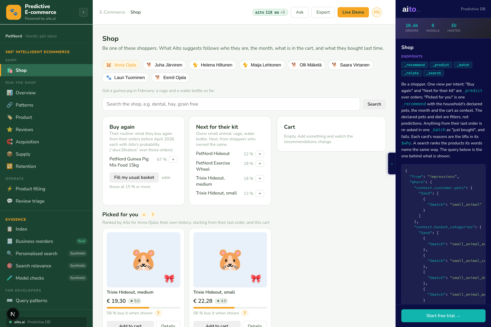
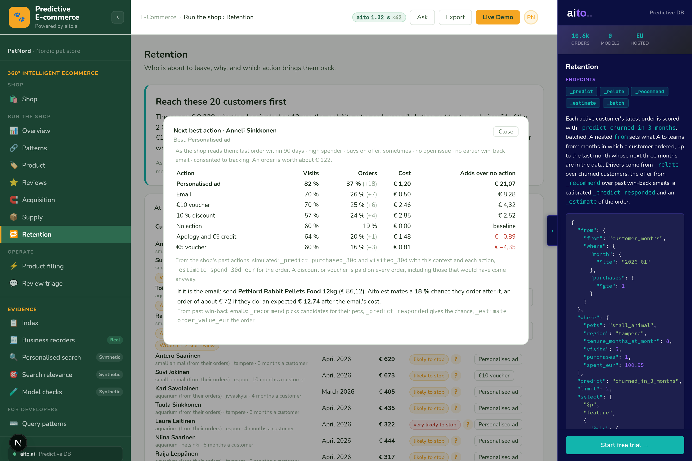
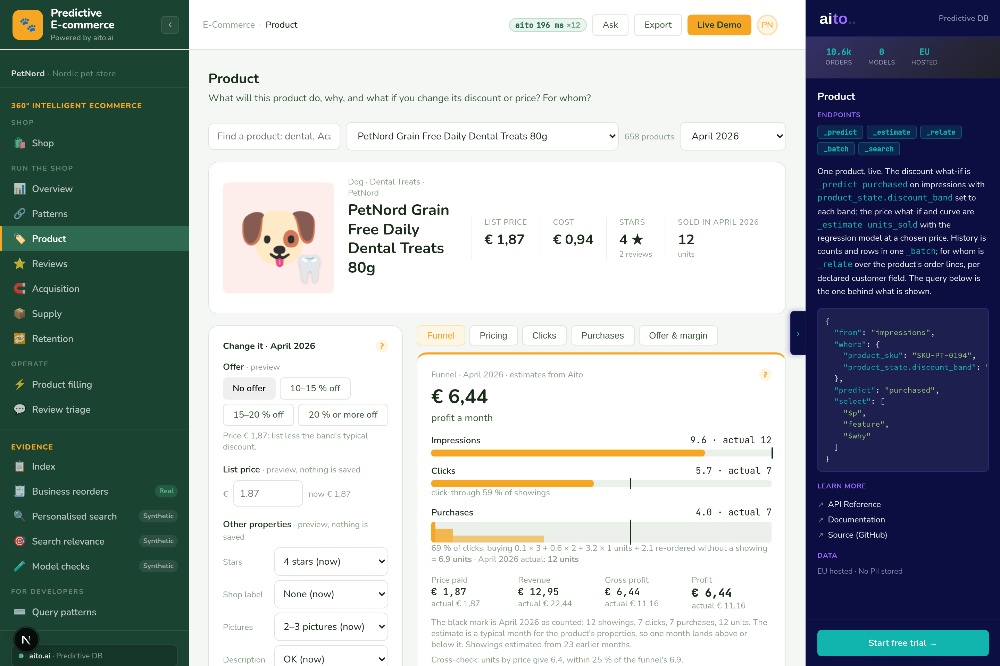
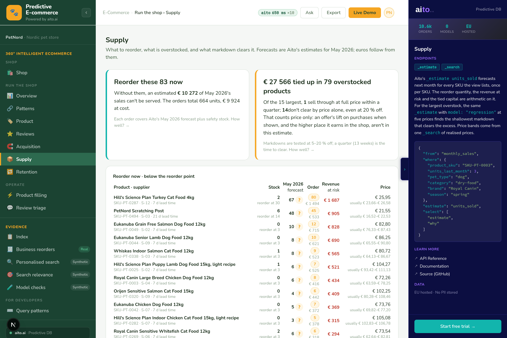

A pet-food shop, PetNord: 3,000 customers, 10,594 orders. Every suggestion, forecast and risk on these screens is a query to Aito, with the reasons shown. No models to train, no feature pipeline.
Buy again, next for their kit and picked for you: _predict, _recommend, _search on the shopper's own history.

Six actions against doing nothing, per at-risk customer: the personalised ad adds €21.07 here, the €5 voucher loses €4.35.

The same products as in the Shop view, seen from behind the counter. One product, one month: the funnel from showings to purchases and the profit are Aito's estimates, with what actually happened marked beside them.

Reorder 83 now. €27,566 tied up in 79 overstocked products. Forecasts are _estimate; the euros follow from them.
